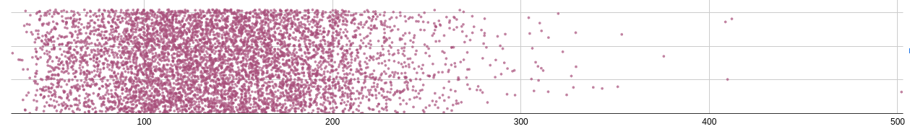
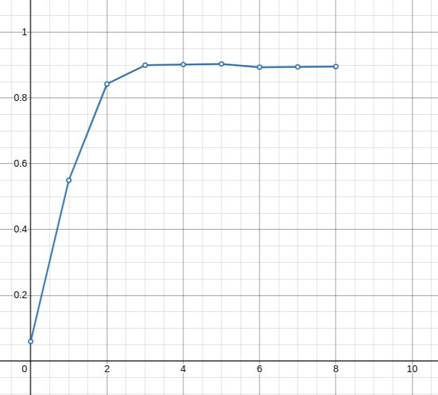
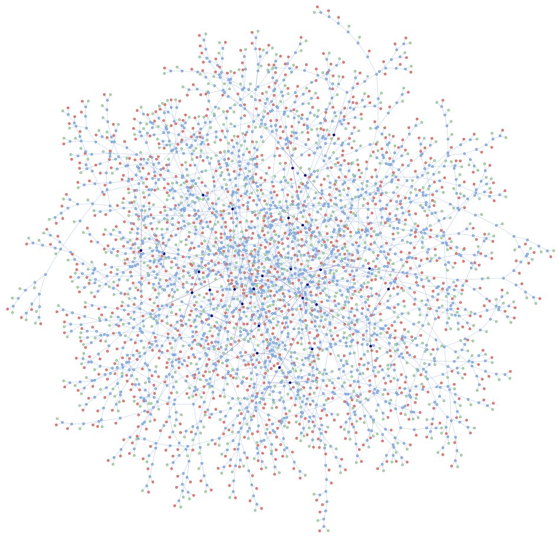

Really Fast Decision Trees
February 10, 2025
Compacting Decision Trees
Recently, I was making a classifier for acute kidney injury (AKI). I have a dataset of around 14,000 entries, each representing a patient. I have their age, sex and between 0 and 45 timestamped creatinine samples.
Background
If you don't know, a 'decision tree' is a learned function that takes the form of a flow chart. The questions on the flow chart ask me something about the patient "is the patient older than 65?". If yes, I might go down one path, if no, I'll go down another. It's my job to construct a sufficiently complex tree with lots of good questions so that if you walked through this tree, you could decide whether somebody has AKI with pretty good confidence.
First, we need to aggregate everyone's creatinine test results, because it's hard to compare Bob with 41 test results with Dylan who only has 2. You can choose things like the median of Bob's creatinine results, or the range. Something like that. Then we just have one value for Bob and one for Dylan. Our patient data might look something like this now:
struct patient_data {
bool sex;
uint8_t age;
float mean_cr;
float recent_cr;
float stdv_cr;
};
Next, we need to construct our tree. The classic way of doing this is to cycle through a bunch of questions about the data that split it in half. We give each split a score (e.g. information gain) and make the first question in our tree the one that maximized that score. Then we ask questions about each half of the split data in the same way until we reach some terminating condition.
The trickiest part of this is "what questions do I ask?". If the patient data is already a list of binary features (e.g. "male/female" for sex), it's easy just say "is this patient male?". The hard part comes when you need to ask questions about real numbers, like creatinine test results.
Deciding Features
What if I told you that I can get good performance by turning my real numbers into around four binary features? This _vastly_ simplifies decision tree construction, _hugely_ compacts the data and is generally just cool. For example our patient data can be packed into around 16 bits (down from 112) and there are only 16 questions to try out (instead of hundreds or even thousands with traditional methods).
If we take the data for a given feature (mean_cr for example) we get
some distribution like this:

Think of this kind of like a histogram. We're trying to see how many people have a mean creatinine value (look, I don't know what this is measured in -- the dataset doesn't say) of X.
I take all this data and divide it into N buckets. The nᵗʰ
bucket is assigned a value such that (n/N)% of people have a
mean_cr less than that value and the rest have a mean_cr greater
than that value (basically). If you had 100 buckets, the iᵗʰ bucket
would represent the mean of the values in the i..i+1ᵗʰ percentiles.
Conceptually you can think of this as squishing the sparse bits of the
data and stretching the dense bits of the data.
If I split this into 32 buckets, I now have a function that takes a
mean_cr and spits out which percentile (really 'per-32-ile') it fits
into. I dont want you to think of this as percentiles though. I want you
to think of it as squashing the data into as few integral values as
possible, while keeping _as much information as possible_. It's a form
of _compression_, _that's_ the intuition!
Now, we take this function (which, btw is a binary search) and use it to
convert each mean_cr into a value from 0 to 31. Then, we encode this
5-bit number as 5 binary features. That's it... and it _works_! For
example, we take a mean_cr=202.45.
1. Find which bucket this is in. Let's say it's 19.
2. Convert 19 to a 5-bit integer 0b10011
3. The float mean_cr feature is now 5 binary features, so we assign
the value to each of these.
struct patient_data {
// ...other fields
uint1_t mean_cr_0 = 1;
uint1_t mean_cr_1 = 1;
uint1_t mean_cr_2 = 0;
uint1_t mean_cr_3 = 0;
uint1_t mean_cr_4 = 1;
}
Why Does it Work?
Here's a graph when I first started adding features to this model. I
think at this point I just use { sex, age, recent_cr, median_cr }. I
train on 7000 datapoints and test on another 7000 datapoints and compute
an F₃-score.

As you can see, 3-5 bits is optimal for this. From tweaking the model, as training data increases using 6-7 bits becomes a better choice.
I peaked at a 0.985 F₃-score, before screwing up some weights right before the deadline for this coursework (you receive full marks for a 0.95 F₃-score). This puts me around the middle of the class average. Considering though that I don't implement pruning, or take into account the dates of the creatinine scores and only use 40 bits of features, the fact that I am doing better than random forest models that train for 20x longer with some Python framework is genuinely not that bad (I think). Anyway, it's more cool that this works _at all_.
I think the intuition here is that a 4-bit number representing the per-16-ile is acutally a really nice way of representing decisions to narrow down a region of a distribution. The first bit says "I am in the top or bottom 50%" The second says "I am in the top or bottom 50% of _this_ subdistribution". Etc. Fun.
Speed
What we should really be comparing this to is the performance of the NHS algorithm. I don't know the exact performance (I need to test it). But roughly, for every 1000 people who come have AKI, we send ~200 of them home saying they don't have it. With this simple classifier that number gets reduce to ~20.
What's _even worse_ is that the most complicated version of the algorithm I've made could be run in reasonable time in the 1990s on a _PC CPU_ when we _knew about decision trees_ already.
Currently inference (read string data in, parse, produce classification, on my laptop [single core, ]) takes ~1.5μs. Even if we assume that the Pentium 60 was 1000x slower (which is probably wasn't), that's still in the order of milliseconds!
Training takes 10ms-150ms depending on the size of the random forest and the amount of input data. On a Pentium 60, That's 10s to 3 minutes. This is _totally reasonable numbers_!!! This code isn't even particularly aggressively optimized. Basically, we've had the ability and knowledge to diagnose this illness with excellent accuracy for over 30 years and we're still not doing it. What the heck.
Here's a fancy representation of my random forest though.
